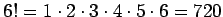

| Vorzeichen (signum) der Zahl a, z.B. sign, sign0 = 0 | |
| Absolutbetrag der Zahl a | |
| am | a in der m-ten Potenz |
| Quadratwurzel aus a | |
| n-te Wurzel aus a | |
| Logarithmus der Zahl a zur Basis b, z.B. | |
| dekadischer Logarithmus (Basis 10) der Zahl a, z.B. | |
| natürlicher Logarithmus (Basis e) der Zahl a, z.B. |
| Fakultät, z.B.: ; | |
| speziell: 0!=1!=1 | |
| ; | speziell: 0!!=1!!=1 |